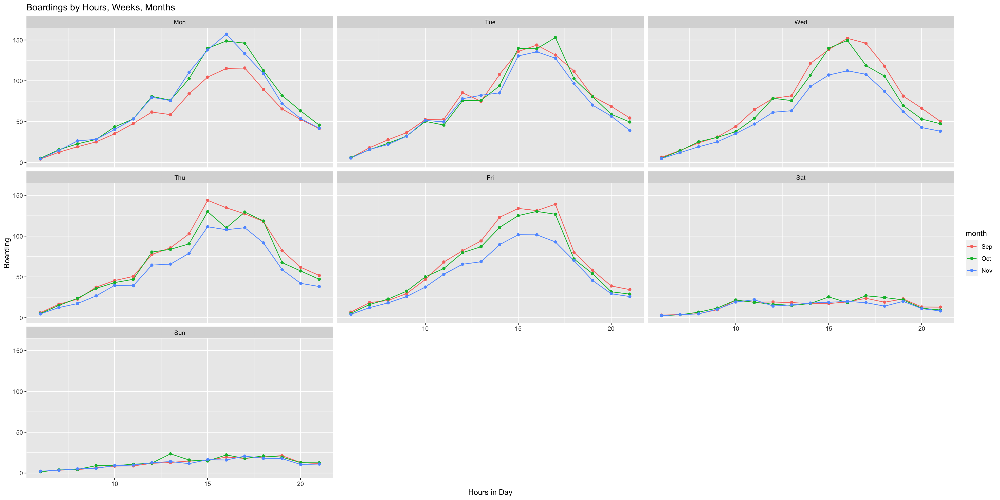
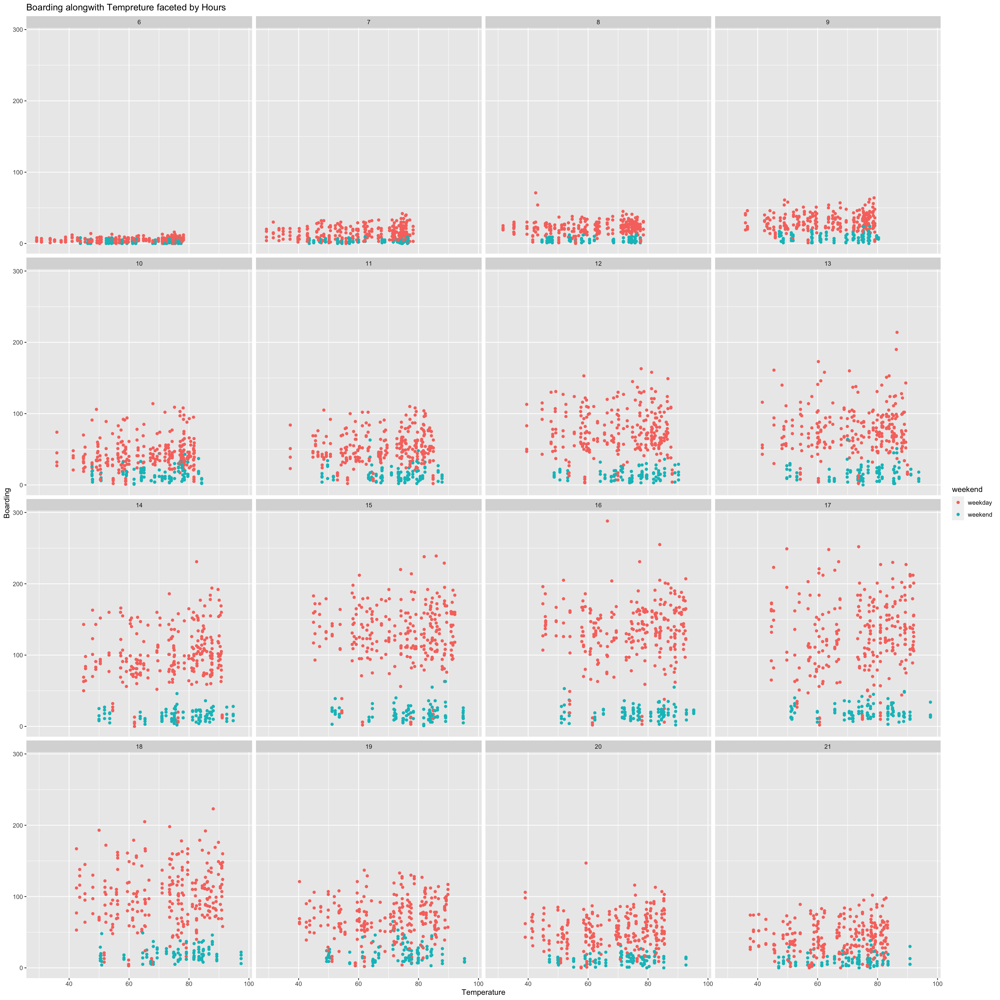
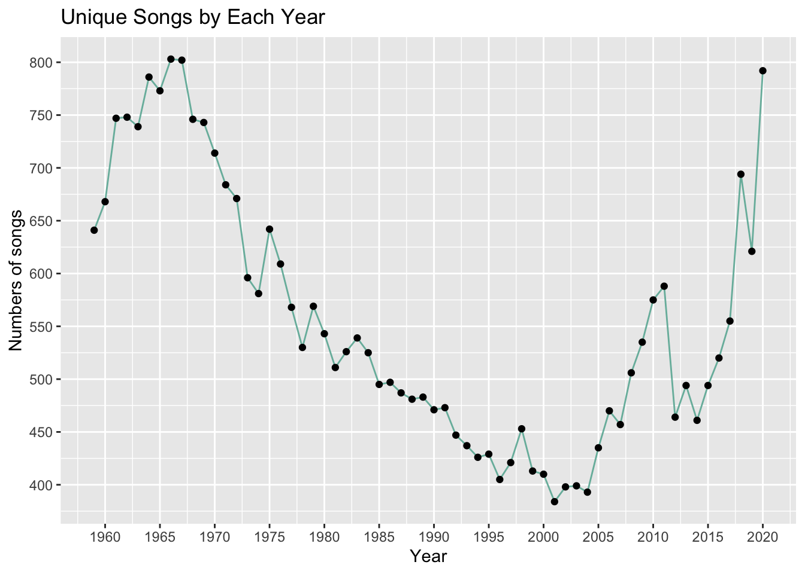
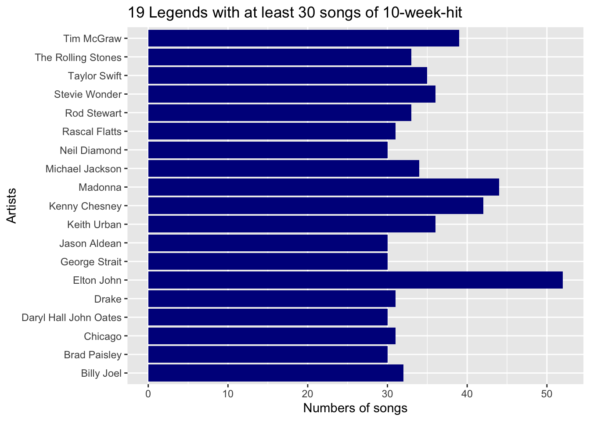
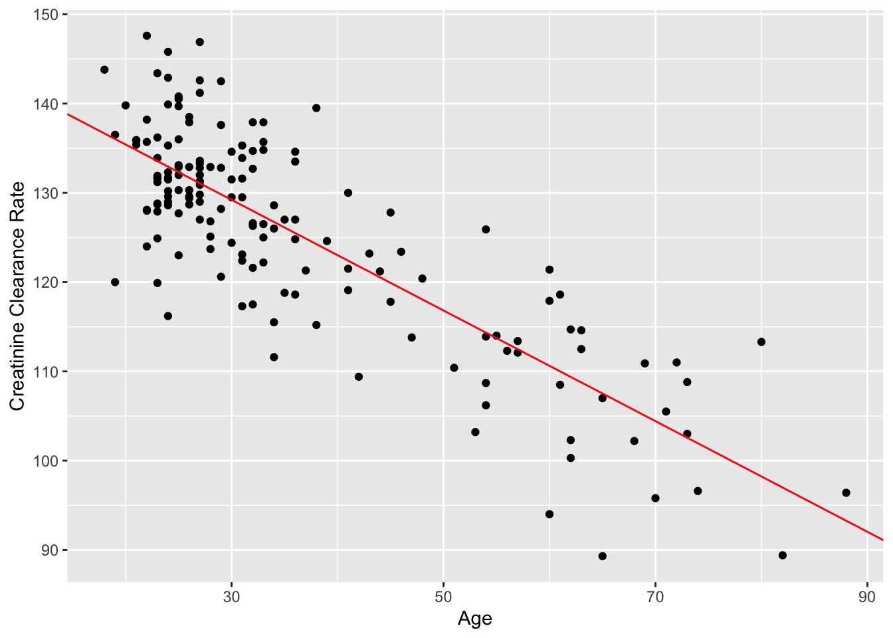
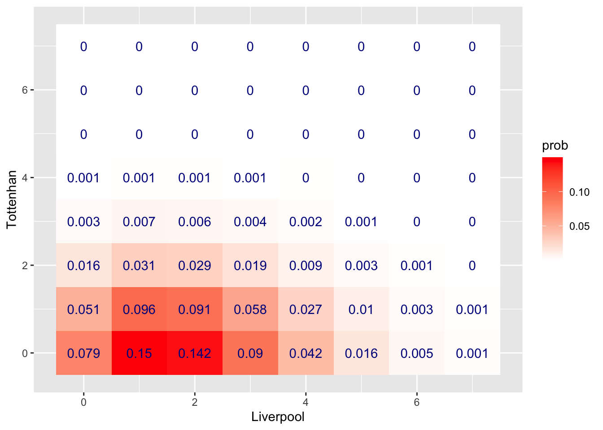
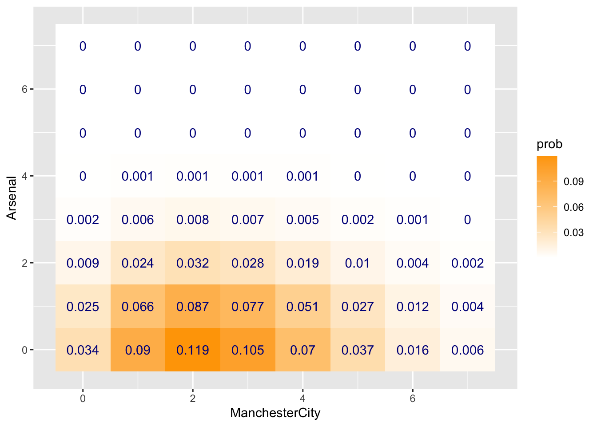

Chapter 2 Homework 2
2.1 Problem 1 Capital Metro UT Ridership
2.1.1 Plot 1

Caption: Above is the the combination of line plots above, each plot stands for a day in week. x-axis means the hours throughout a day from 6 a.m. to 9 p.m. The y-axis means the average boarding. We have 3 lines in each plot, representing 3 months from September to November. Orange line shows September, green line shows October, and blue line shows November.
Answer: From the combination of plots above, I found that the peak boarding from Monday to Friday are quite similar because these five days are workdays; students, teachers, and staffs are taking regular routines in these days. But, on weekend, the boarding curves become so flat because of no class and no work at school.
My reason for that the average boarding on Monday in September is lower than the other 2 months is September has a lot of new students coming. Most new students just know new friends and maybe hanging out with new friends on Sunday night. So, on Monday, they probably could not get up early enough to catch up a bus. That is why the average boarding on Monday is quite less than the other 2 months.
The average boarding on Weds/Thurs/Fri in November looks lower. I guess it is related to the Halloween Holiday. As we know, in Halloween, we have a short break and most people definitely do not come to school. Thus, undoubtedly, the average boarding should be lower.
2.1.2 Plot 2

Caption: This combination of scatter plots shows the relationship between boarding number and temperature. The x-axis is temperature of each section and the y-axis is the boarding amount during each 15min section. Also each faceted plot stands for each hour from 6 a.m. to 9 p.m. e.g. the first plot has a “6” above, which means 6 a.m. and the last plot has a 21 above which means 9 p.m.
Answer: Actually, I did not see any trend alongside with temperature. In each hour of days, the points distribution seems to be very chaotic and ruleless. Therefore, I dare to say temperature has no solid effect on the number of UT student boarding the bus.
2.2 Problem 2 Wrangling the Billboard Top 100
2.2.1 Part A
| performer | song | weeks |
|---|---|---|
| Imagine Dragons | Radioactive | 87 |
| AWOLNATION | Sail | 79 |
| Jason Mraz | I’m Yours | 76 |
| The Weeknd | Blinding Lights | 76 |
| LeAnn Rimes | How Do I Live | 69 |
| LMFAO Featuring Lauren Bennett & GoonRock | Party Rock Anthem | 68 |
| OneRepublic | Counting Stars | 68 |
| Adele | Rolling In The Deep | 65 |
| Jewel | Foolish Games/You Were Meant For Me | 65 |
| Carrie Underwood | Before He Cheats | 64 |
Caption: This is the table for top 10 songs spending most weeks on the Billboard Top 100 from 1958 to 2021.
The first column shows the performer name of these songs, the second column lists the name of these songs, and the third colume stands for the total number of weeks for each song.
2.2.2 Part B

Caption: This is a line graph which shows the total amount of unique songs appearing in the Billboard Top 100 in each year from 1959 to 2020. x-axis represents the year and y-axis stands for the number of the songs.
Comment: I found that around the middle of 1960s, there was a peak which a lot of songs appearing in the Top List. I guess that one of potential reasons is that in these years, the hippie movement arose and gradually dominated the United States. Alongside with this movement, a lot of genres of music, like Rock&Roll, R&B, was becoming more and more popular. So during this time, songs were pretty diverse. Another rising trend seems to happen after 2010, maybe just because of globalization, songs from other cultures, such as K-pop, Latin, are becoming more and more public.
2.2.3 Part 3

Caption: This is a bar plot showing 19 artists with equal or over 30 songs at least 10 weeks on the Billboard. The x-axis is the the number songs of each artist and the y-axis shows the name of each artist.
Sir Elton John has over 50 songs appearing more than 10 weeks in Billboard, which is a great achievement!
2.3 Problem 3 Regression Practice
Below is the intercept and estimated coefficient of age:
## (Intercept) age
## 147.8129158 -0.6198159Below shows the scatter plot of age(x-axis) and creatinine clearance rate(y-axis) with a reference line with the estimators above:

2.3.1 Part A
Let me put age = 55 i.e x = 55 into the equation y(creatinine) = 147.81 - 0.62x. We can get:
## [1] 113.71So, we expect that a 55-year-old person has 113.71 ml/min creatinine clearance rate.
2.3.2 Part B
The coefficient of age told us that when we grow up 1 year, we expect to decrease 0.62 ml/min of creatinine clearance rate. i.e. -0.62 ml/min per year.
2.3.3 Part C
Expected 40-year-old creatinine clearance rate:
## [1] 123.01Real rate: 135 ml/min
Expected 60-year-old creatinine clearance rate:
## [1] 110.61Real rate: 112 ml/min
So, we can know the difference between real creatinine clearance rate for the 40-year-old is 135-123.01 = 11.99 and the difference between real creatinine clearance rate for the 60-year-old is 112 - 110.61 = 1.39. So from these two difference 11.99 is bigger than 1.39, we can say the 40-year old is healthier.
Let us look another comparison, the comparative rate which defines as difference/expected value:
For the 40:
## [1] 0.097For the 60:
## [1] 0.013So, the rate of the 40 is almost 9 times of the rate of the 60, which means the 40 is comparatively healthier than the expected value for 40.
In conclusion, the 40-year-old is healthier than the 60-year-old in terms of creatinine clearance rate.
2.4 Problem 4 Probability Practice
2.4.1 Part A
Let event A be buying 3 cars and none of them is lemon.
So, ~A should be buying 3 cars and at least one of them is lemon.
P(~A) = 1 - P(A) =
## [1] 0.719The probability of getting at least one lemon should be 72%.
2.4.2 Part B
Since each time of throwing a dice is independent, we can treat throwing a dice twice as independent events.
For the probability of getting the sum of 2 number is odd, we have 2 scenarios: First, first time is a even and second time is a odd; the other is converse. So the probability of this event should be P(odd) * P(even) + P(even) * P(odd), which is
## [1] 0.5For the probability of the sum of 2 number is less than 7, we can go through case by case. If we get 1 at first time, we can get 1,2,3,4,5 at the second time, the probability of it should be 1/6 * 5/6 = 5/36. If we get 2 at first time, we can get 1,2,3,4 at the second time, the P of it should be 1/6 * 4/6 = 4/36. If getting 3 at the first time, the P should be 1/6 * 3/6 = 3/36. If 4, then 1/6 * 2/6 = 2/36. If 5, then 1/6 * 1/6 = 1/36. If 6, no chance to get less than 7, so the P is 0. Then we add up these probabilities, we can get
## [1] 0.417So the chance to get the sum of 2 numbers less than 7 is about 42%
In this cas, we can go through case by case again. If we get 1 at first time, we can get 2,4 at the second time, 2 cases here. If we get 2 at first time, we can get 1,3 at the second time, 2 cases hear. If getting 3 at the first time, we can get 2 at second time, then 1 case. If 4, then get 1 at second time, still 1 case. If 5, then 0. Then we add up these case, we can get 6 case.
The total case is 6 * 6=36, and the chance of getting odd number is 0.5, so the odd case is 0.5 * 36 = 18.
Thus, the P(<7|the number is odd) = 6/18 = 1/3
If they are independent, then P(A|B) = P(A), but here, P(<7) = 0.42 and P(<7|odd) = 0.33. Therefore, they are not independent apparently.
2.4.3 Part C
Information we already have:
P(RC) = 0.3
P(TC) = 0.7
P(yes|RC) = 0.5
P(no|RC) = 0.5
P(yes) = 0.65
P(no) = 0.35
What we need to get: P(yes|TC)
P(yes) = P(RC) * P(yes|RC) + P(TC) * P(yes|TC), which is 0.65 = 0.3 * 0.5 + 0.7 * x
Solve the equation, we get
## [1] 0.714Thus, there are 71% Truthful visitors saying yes in the survey.
2.4.4 Part D
Given information:
P(positive|disease) = 0.993
P(negative|non-disease) = 0.999
P(disease) = 0.000025
P(non-disease) = 1 - 0.000025 = 0.999975
What we need to get: P(disease|positive) by Bayes Rule
P(positive|non-disease) = 1 - P(negative|non-disease) = 0.0001
P(positive) = P(positive|disease) * P(disease) + P(positive|non-disease) * P(non-disease) =
## [1] 0.0001248225P(disease|positive) = P(positive|disease) * P(disease) / P(positive) =
## [1] 0.1988784So, there is 19.9% chance someone have the disease when testing positive.
2.4.5 Part E
Given Information:
P(R/A) = 0.99
P(R/~A) = 0.10
P(A) = 0.05
P(~A) = 0.95
Need to show: P(A/R)
P(R) = P(A) * P(R/A) + P(~A) * P(R/~A) =
## [1] 0.1445P(A/R) = P(R/A) * P(A) / P(R) =
## [1] 0.3425606So, the probability of that an aircraft is present given it is registered should be around 34.26%
2.5 Problem 5 Modeling soccer games with th Poisson distribution
In order to answer the question what are the estimated probabilities of win/lose/draw results between 2 teams, we need to use the Probability Mass Function of Poisson Distribution to calculate the probabilities of all possible goals for both teams.
The PMF of Poisson distribution takes the following form:
\[ P(X=x)=(λ^x/x!)e^−λ \]
λ means the expected goals for each team and event X means how many goals scored in a game.
Approach: First, I need to make an assumption that the goals scored by each team is an independent event. So, when a probability of a game score(like 2-1) should be the probability of first team scoring 2 goals times the probability of second team scoring 1 goal.
Find the λ (expected goal by a team) by the formula:
The team’s attach power * The rival’s defense weakness * Home/away boost, in which:
Attach power = The total goals for a team in a season/the average goals of all teams in a season
Defense weakness = The total goals lost by a team in a season/the average goals lost of all teams in a season
Home boost = the average goals for all home teams in a match
Away boost = the average goals for all away teams in a match
After we get λ, we need to use PMF of Poisson to calculate a probabilty of an outcome. For example:
Set team A’s λ is 1.5 and team B’s λ is 1.7, then the goal for A is Xa and the goal for B is Xb.
Since Xa and Xb are independent, we have
\[ P(Xa=2,Xb=1) = (1.5^2/2!)e^−1.5 * (1.7^1/1!)e^−1.7 \]
With just a little bit more work, we can use calculate the probability of all possible outcomes up to a rip-roaring (but very unlikely) 7-7 draw by ‘tibble’, ‘expand’, ‘mutate’ functions in R.
Then, we have a table for all probabilities of games from 0-0 to 7-7 (64 outcomes). Then by ‘filter’ function, we can calculate the probability of each scenario(win/lose/draw).
Next, Let me calculate the home/away boost, and seasonal average goals for further use
The average number of goals scored i.e. conceded by teams is (all the goals/20 teams):
## [1] 53.6The home boost is
## [1] 1.57The away boost is
## [1] 1.252.5.1 Question 1
Liverpool(home) vs Tottenhan(away)
The Attack Strength for Liverpool(home) sould be:
## [1] 1.66The Defense Weakness for Liverpool(home) should be:
## [1] 0.41The Attack Strength for Tottenhan(away) should be:
## [1] 1.25The Defense Weakness for Tottenhan(away) should be:
## [1] 0.73The λ for Liverpool(home) should be:
## [1] 1.89The λ for Tottenhan(away) should be:
## [1] 0.64Now, we have the λs for both Liverpool and Tottenhan.
Now, show head 5 rows in a probabilities table for all possible game scores up to 6-6:
| Liverpool | Tottenhan | prob | |
|---|---|---|---|
| 1 | 0 | 0 | 0.079 |
| 2 | 0 | 1 | 0.051 |
| 3 | 0 | 2 | 0.016 |
| 4 | 0 | 3 | 0.003 |
| 5 | 0 | 4 | 0.001 |
Then visualize it by heatmap:

Then calculate the probabilities of 3 scenarios:
Liverpool win:
## # A tibble: 1 × 1
## `sum(prob)`
## <dbl>
## 1 0.672Tottenhan win:
## # A tibble: 1 × 1
## `sum(prob)`
## <dbl>
## 1 0.118Draw:
## # A tibble: 1 × 1
## `sum(prob)`
## <dbl>
## 1 0.209In conclusion, the chance of Liverpool winning is around 67.2%, the chance of Tottenhan winning is 11.8%, and the chance of draw is 20.9%
2.5.2 Question 2
Manchester City(home) vs Arsenal(away)
The Attack Strength for Manchester City(home) sould be:
## [1] 1.77The Defense Weakness for Manchester City(home) should be:
## [1] 0.43The Attack Strength for Arsenal(away) should be:
## [1] 1.36The Defense Weakness for Arsenal(away) should be:
## [1] 0.95The λ for Manchester City(home) should be:
## [1] 2.65The λ for Arsenal(away) should be:
## [1] 0.73Now, we have the λs for both Liverpool and Tottenhan.
Now, show head 5 rows in a probabilities table for all possible game scores up to 7-7:
| ManchesterCity | Arsenal | prob | |
|---|---|---|---|
| 1 | 0 | 0 | 0.034 |
| 2 | 0 | 1 | 0.025 |
| 3 | 0 | 2 | 0.009 |
| 4 | 0 | 3 | 0.002 |
| 5 | 0 | 4 | 0.000 |
Then visualize it by heatmap:

Then calculate the probabilities of 3 scenarios:
ManchesterCity win:
## # A tibble: 1 × 1
## `sum(prob)`
## <dbl>
## 1 0.775Arsenal win:
## # A tibble: 1 × 1
## `sum(prob)`
## <dbl>
## 1 0.0793Draw:
## # A tibble: 1 × 1
## `sum(prob)`
## <dbl>
## 1 0.140In conclusion, the chance of ManchesterCity winning is around 77.5%, the chance of Arsenal winning is 7.9%, and the chance of draw is 14%